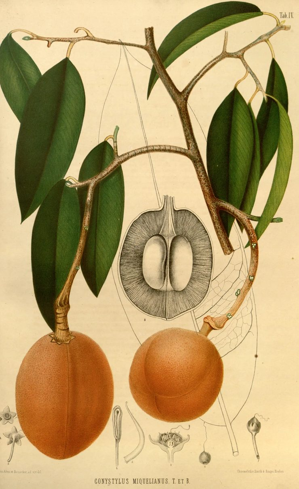
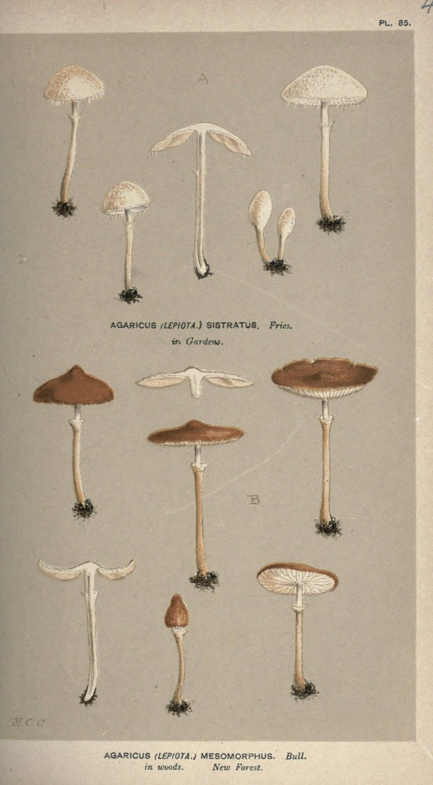
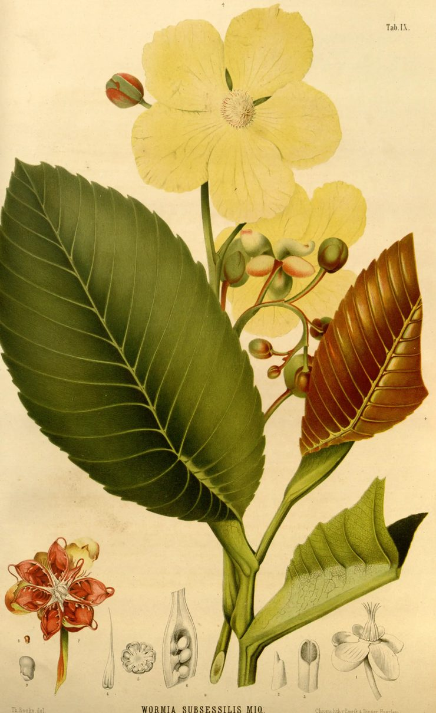

Sheet · a reading
The Die Uncast
- Specimen
- Promises like Pie-crust
- Maker
- Christina Rossetti
- Written
- 20 April 1861 — the date her brother read off her notebooks
- First printed
- New Poems (Macmillan, 1896), edited by William Michael Rossetti — thirty-five years later, and two years after her death
- This text
- The 1896 first printing, pages 130–131. Line 20 keeps its colon
- Read
- 8 September 2026
- Read by
- Ryan Boren
- Read alongside
- Huysamen, Hatton and Kourti (2026), Embrace Difference, Challenge Normativity
- Terms
- Caves, campfires, watering holes · Shared-air space · Monotropism · Co-regulation
In 1861 Christina Rossetti wrote twenty-four lines refusing to promise anybody anything, and put them in a notebook. A hundred and sixty-five years later a paper in Feminism & Psychology gave the thing she was refusing a name — the relationship escalator — and asked what would happen if Autistic people were told, early, that stepping off it was allowed. This sheet reads the poem as the permission slip nobody handed me.
Promise me no promises, So will I not promise you: Keep we both our liberties, Never false and never true: Let us hold the die uncast, Free to come as free to go: For I cannot know your past, And of mine what can you know?
You, so warm, may once have been Warmer towards another one: I, so cold, may once have seen Sunlight, once have felt the sun: Who shall show us if it was Thus indeed in time of old? Fades the image from the glass, And the fortune is not told.
If you promised, you might grieve For lost liberty again: If I promised, I believe I should fret to break the chain: Let us be the friends we were, Nothing more but nothing less: Many thrive on frugal fare Who would perish of excess.
Promise me no promises Link to this section
I read Promises like Pie-crust as liberation from eternal vows and possessive romance into something more compatible with my ways of being.
Look at what the first stanza actually declines. Not the other person — the promise. Not the closeness, but the claim. Keep we both our liberties
is a plural: the poem is not protecting one party from the other, it is protecting the same thing in both of them, and it treats that thing as the precondition for anything else. Then it goes further and declines certainty itself: Never false and never true.
The die is held, uncast. Not thrown and lost, not put away — held, in the hand, with the outcome still open.
Cisgender heterosexual monogamy has always been a bad fit for me. The poem helped me develop my solo polyamorous and pansexual identity.
The escalator, and not knowing there was a way off Link to this section
The thing Rossetti is standing beside without a name for it got named in 2026, in a paper built out of the words of forty-six Autistic adults. The authors borrow the term from Amy Gahran: the relationship escalator, the single moving staircase from dating to exclusivity to cohabitation to marriage to children to lifelong monogamy, on which every step both proves and demands the next.
There are a great many social normativities … and “social scripts” such as the relationship escalator, all of which are based around the false assumption that humans don’t vary.
What the paper is really about is not the escalator. It is the cost of not being told there is a way off it.
Together, these narratives reveal the consequences of not knowing – and not being supported to know – about possibilities for intimate relationships beyond cisgender heterosexual monogamy.
Which is where a poem comes in. A twenty-four-line refusal, printed in 1896 and sitting on the shelf ever since, is one of the few places a person could have found the idea before anybody thought to teach it.
Free to come as free to go Link to this section
The totalizing expectations of traditional romantic relationships are incompatible with me. They are excessive to the point of overwhelm and burnout. I need quiet parallel existence in a shared campfire setting and solo recharge time in a cave setting by myself. I need intermittent relationships where the die is held uncast, free to come as free to go.
Shared-air space relationships of any sort are intensive pattern dances done at the terrifying tempo of synchronous, full-sensory real-time. I need daily doses of solitude and regular hibernation intervals to sustainably withstand any other human being. Only in solitude do I have the space to unfurl my patterns, un-beset by the outside, and recline into their regulated peace.

A. Bernecker. del.in the lower left; chromolithographed by Emrik & Binger of Haarlem, whose imprint is in the lower right. Public domain; scanned from the Missouri Botanical Garden, Peter H. Raven Library copy for the Biodiversity Heritage Library.
I need my own rhythms and temporalities
— and that phrase is the paper’s, describing exactly this:
These narratives resist and queer the heteronormative, neuronormative, ableist expectations of ‘the relationship escalator’, complete dependence, coliving and cosleeping as the defining features of a legitimate relationship. They offer counter-narratives following their own rhythms and temporalities, and value independence rather than framing it as a deficit.
Value independence rather than framing it as a deficit. That sentence is doing a lot of quiet work. The clinical literature has spent decades reading a preference for one’s own home, one’s own bed and one’s own schedule as social impairment. Here it is read as a relationship structure, which is what it is.
I tried sharing a home with a partner in the past, and it did not work for me. I prefer being in control of my own home environment and having a flexible schedule. I also prefer being by myself when I am not feeling well, particularly when I am not feeling well mentally.
Many thrive on frugal fare Link to this section
Every line speaks to me, especially the ending:
Many thrive on frugal fare
Who would perish of excess.
Read that as a sensory statement and it stops being a proverb about modesty. Perish of excess is what happens to a body given more input than it can process — more contact, more noise, more presence, more obligation to be available. Rossetti reaches for frugal and excess, words about quantity, and puts thrive and perish on either side of them. Not better and worse. Different amounts, and a different amount is fatal.

van Aken et Bernecker, ad viv. del.— two hands, drawing from the living plant; chromolithographed by Emrik & Binger of Haarlem. Public domain; scanned from the Missouri Botanical Garden, Peter H. Raven Library copy for the Biodiversity Heritage Library. Mounted here for the weight of the thing, not as an argument.
This is the same move Woolf makes on the first sheet on this plate: a claim that reads as temperament turns out, on inspection, to be a claim about a body.
Keep we both our liberties Link to this section
I need time to immerse myself in my monotropic interests. My interests are a relationship in themselves. I immerse myself in them and get into flow states that are necessary to maintain regulation and mental health. Keep we both our liberties
so that I may pursue my passions.
Let us co-regulate together, and let us regulate apart pursuing our passions.
Darwin drew the thing itself, without meaning to. A tendril of white bryony, caught on a twig at one end and held by its own stem at the other, contracts into a spiral — and the spiral runs one way from one end and the other way from the other, with a short straight stretch in the middle where the two turns meet. He printed it as Fig. 13 of The Movements and Habits of Climbing Plants, captioned A caught tendril of Bryonia dioica, spirally contracted in reversed directions
, and it is worth going to look at.
One attachment, holding. Two ends, each turning its own way. The straight bit in the middle is where neither one gave in. Darwin is explaining a mechanical necessity — a tendril fixed at both ends cannot coil in a single direction without unwinding itself — and reading it as a diagram of anything else is entirely our doing. But it is the best picture of keep we both our liberties
that anybody has drawn, and its author thought he was describing a weed.
There are concepts such as Living Apart Together and solo polyamory which address the idea that relationships must include cosleeping and cohabitation.
The definition of the second of those that I keep coming back to is Amanda Van Slyke’s, and it turns on ownership rather than on logistics:
Solo polyamory is the idea that people are autonomous beings who have different needs and wants, and alongside good communication and mutual respect between all partners, no one puts rules on each other because no one owns one another.
No one owns one another. Rossetti gets there in the negative, a hundred and sixty years earlier, by declining to hand over the deed.
Not alone in needing to be alone Link to this section
I’m not alone in my need to be, sometimes, alone. I’m not alone in my need for multiple different people with different ways of being to fill my life when it needs filling, to co-regulate me when I need to be with someone in a meaningful way to help balance and recharge the sensory system and bodymind.

in Gardens; B is Agaricus (Lepiota) mesomorphus,
in woods. New Forest.Signed M.C.C. in the lower-left corner — Cooke’s own initials; his preface says the contributors’ initials are attached to their drawings. Public domain; scanned from the University of Toronto copy for the Biodiversity Heritage Library.
One plate, two species, and not one specimen on it touching another. Every one at its own size, its own angle, its own stage of opening, on its own tuft of earth — one group found in gardens, the other in the New Forest, and arranged together on one sheet anyway.
The paper’s participants over fifty say the not-knowing out loud, and it is the hardest part of it to read.
At the ripe age of 67, I can honestly say I wished I had followed less conventional relationships. With two failed heterosexual marriages (three kids all following pretty straight stuff) and a non-live-in 7 year partnership I feel like I missed out on aspects of love and intimacy just by responding to the nearest easiest offers.
I often think that if I had known polyamory was a thing when I was younger I would have chosen to form relationships in this way, but I was never taught this was an option or how to navigate these types of relationships.
I struggled in my early 20s when I first tried to date in a neurotypical way and follow conventions, I did not know that there was more than one way of doing it.
Three people, three decades apart, saying the same sentence: nobody told me. Not I chose wrong. I did not know there was a choice.
Let us neuroqueer relationships Link to this section
Let us neuroqueer relationships so that they suit our authentic ways of being instead of forcing us to live in falsity.

Th. Rocke, del.in the lower left; chromolithographed by Emrik & Binger of Haarlem. Public domain; scanned from the Missouri Botanical Garden, Peter H. Raven Library copy for the Biodiversity Heritage Library.
Look at the leaves on that one plant. Green, russet, and a pale underside — painted as three different things because at the moment somebody sat down in front of it, they were three different things. A plate that averaged them into one correct leaf would be a worse record of the plant.
That is close to where the paper lands, and the paper lands there as a demand on services rather than as a hope:
…good social care and support for intimate lives is underpinned by a neuroqueer ethic, one which affirms difference and divergence from the norm and supports autistic people to build intimate lives in their own time and in ways that are pleasurable, safe, and affirming to them.
These findings show that, ultimately, good social care…; the opening is elided here and the lower-case g kept.
Good support, they contended, entails helping autistic people realise this, while actively supporting them to navigate and build intimate relationships on their own terms.
…becoming aware of, and being supported to safely explore, alternative ways of doing relationships opens choices and avenues with the potential to shift the course of people’s intimate lives.
This research shows that becoming aware of….
One thing worth saying about how that evidence was gathered, because the method is the argument too. The five focus groups were asynchronous and text-based, run on a forum over six weeks by an Autistic researcher, with participants anonymous to each other and free to arrive, leave and return at their own pace. The authors chose it deliberately, to make space for alternative temporalities
. A study about people who need their own rhythms was built to run on them. Nobody had to sit in a circle and take turns at somebody else’s tempo in order to say that sitting in a circle at somebody else’s tempo does not work for them.
A colon, where everyone else prints a full stop Link to this section
Now the reason this sheet names its printing on the label.
In the 1896 first printing, the poem’s lines end in colons. Eight of the twenty-four do, and there are exactly two full stops in the whole poem — at line 16, closing the second stanza, and at line 24, closing the poem. The text in general circulation, including the copy at the Poetry Archive, has three. The extra one lands here:
| 1896, New Poems, page 131 | The text now in circulation |
|---|---|
| I should fret to break the chain : | I should fret to break the chain. |
A full stop there closes If you promised, you might grieve … I should fret to break the chain.
into a finished sentence, and makes Let us be the friends we were
a fresh proposal that follows it. The colon does something else: it makes the whole stanza one movement, in which the friendship is not a new offer but the consequence of everything said before the mark. Because a promise would cost you your liberty and cost me my peace — so let us be the friends we were.
And the line that acquired the extra full stop is the line about breaking the chain.
The colon is not one library’s smudge. It was read twice, in two separately scanned copies of the 1896 edition — the Princeton one and Victoria University’s in Toronto — and the mark, the alternating indent and the date line all agree. The Princeton pages were rendered as images and read rather than trusted to a text extractor, because a finding about one punctuation mark is not something an extractor is evidence about.
Two things this sheet is not claiming. It is not claiming Rossetti’s manuscript, which we have not seen. Her brother printed from the seventeen notebooks she left, and he vouches in his preface for the accuracy of the dates in them; he says nothing about her punctuation, and he left no note on this poem at all. The colon is the earliest reading we can actually put our eyes on, not a certified one. Nor is it claiming that somebody deliberately changed the mark: a full stop in place of a colon at the end of a quatrain is the most ordinary silent tidying there is, and it may have happened in a schoolbook in 1930 and been copied ever since.
What it claims is narrower and it holds: the earliest printing has a colon, the copies you will find have a full stop, and a sheet that quotes one while dating it to the other has said something untrue. The Woolf sheet is here for the same reason, in reverse — there the tidy commas turned out to be the author’s own earlier version, and the untidy and…and…and her later one. The lesson is not trust the older text.
It is: name the printing, or do not quote.
Two smaller things about the 1896 page, so that a reader who goes and looks is not confused. The first word of the poem is set as PROMISE
after a large drop-cap P, which is how the volume opens every poem; the word is Promise. And the compositor set a space before every colon, semicolon and question mark, all through the book — that is the house style of the volume, not Rossetti’s pointing, so the spaces are closed up above. The title over the poem is in full capitals, again for every poem; the volume’s own contents page gives it as Promises like Pie-crust, which is the form this sheet uses. Modern editions mostly print it Promises Like Pie-Crust.
What this sheet will not tidy Link to this section
Rossetti was not writing this. She wrote twenty-four lines in April 1861 to a you
the printing does not name, and her brother, who dated the poem and published it, left no note saying who or why. She had no relationship escalator to step off, no word for what I am, and no reason on earth to be proposing an arrangement. Reading her refusal forward until it arrives at solo polyamory is our move, and it is the whole method of this site rather than a discovery about her. The language is hers. The use is mine.
And the poem’s own bargain is not the one I am describing. Let us be the friends we were, nothing more but nothing less
keeps the liberty by giving up the intimacy. What I want, and what the paper’s participants want, is the opposite trade: keep the intimacy, several of them, and give up the ownership. Rossetti hands back the whole thing. I am borrowing her terms for a deal she did not offer.
The title is borrowed too, and we cannot say from whom. Promises and pie-crust are made to be broken
was already proverbial when she used it. The attribution in circulation runs to Jonathan Swift’s Polite Conversation of 1738, which we have not read in a primary, and there are recorded uses earlier still. So this sheet names no owner for the saying rather than repeating one it has not checked.
And Darwin’s tendril has a second half to it that the sheet has so far left out. Darwin says, on the same page, that the reversed spiral never occurs with uncaught tendrils; and when this appears to have occurred, it will be found that the tendril had originally seized some object and had afterwards been torn free.
A coil is evidence of a hold. A coil on something holding nothing is evidence of a hold that ended. Nothing in the poem, and nothing on this sheet, makes that costless — a life of coming and going leaves a shape behind either way, and free to go
and torn free
are not the same event described twice.
Independence is not automatically a happy ending, and the paper does not pretend it is. Set against every quotation above, from the same study, is this one:
Thinking about what life would look like, I hate sharing a bed to sleep in but not many people are up for considering living separately or in separate rooms. I like my space. I like my independence (although need social care support daily to facilitate that). I think I get a lot of what I need in life from friendships (even with a limited number of people) I do worry about growing old alone though.
The authors do not resolve that, and neither will this sheet. Vero is not failing to want independence. She wants it, has it, needs paid support to have it, and is frightened by what it may cost her in forty years — because the people around her are still on the escalator, and a life off it is much lonelier than it needs to be when almost nobody else has been told they were allowed to step off. The scarcity is the problem, not the preference. That is an argument for more people knowing sooner, which is exactly what the paper asks for, and it is the argument a poem from 1861 has been quietly making from the shelf the whole time.
Let us hold the die uncast.
Provenance Mounted . Label corrected four times on mounting, then corrected once more and re-determined twice when the plates changed.